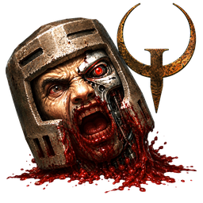
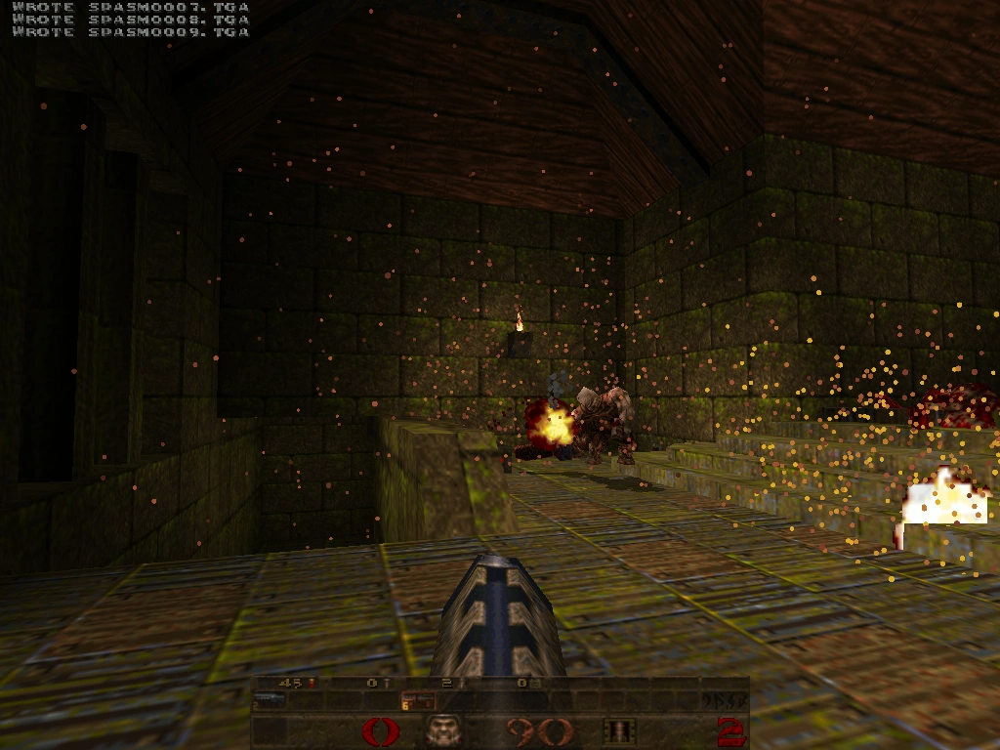
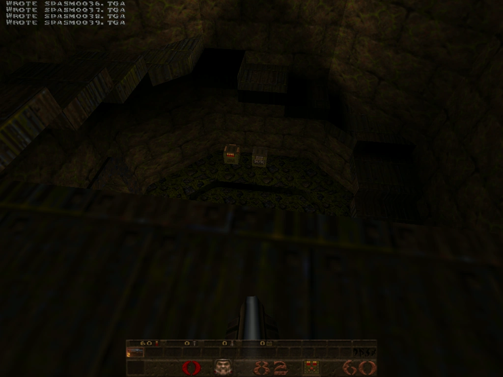
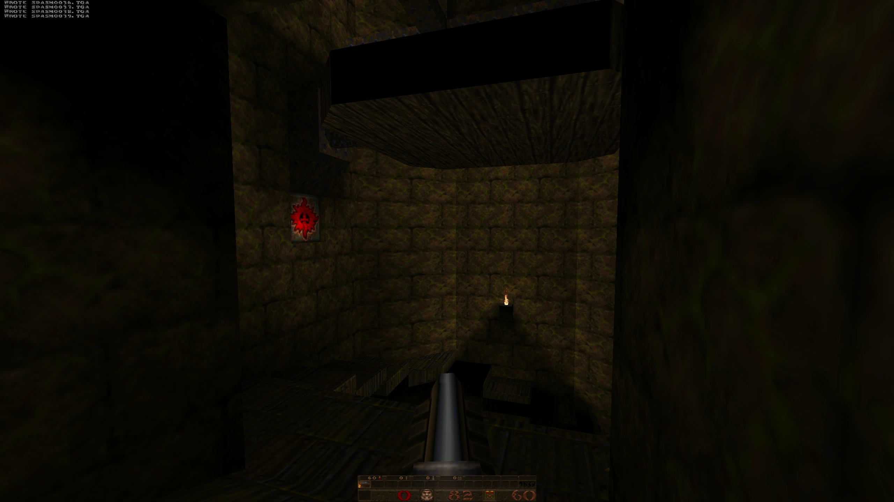
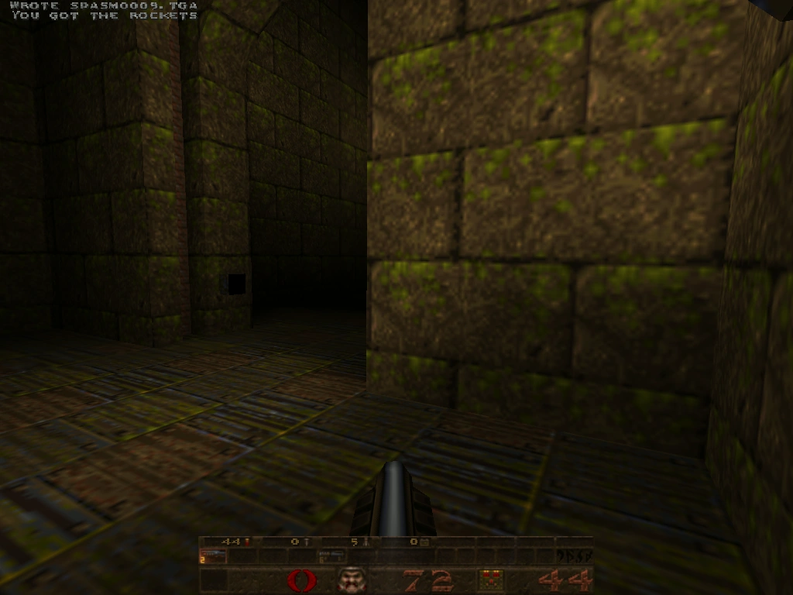
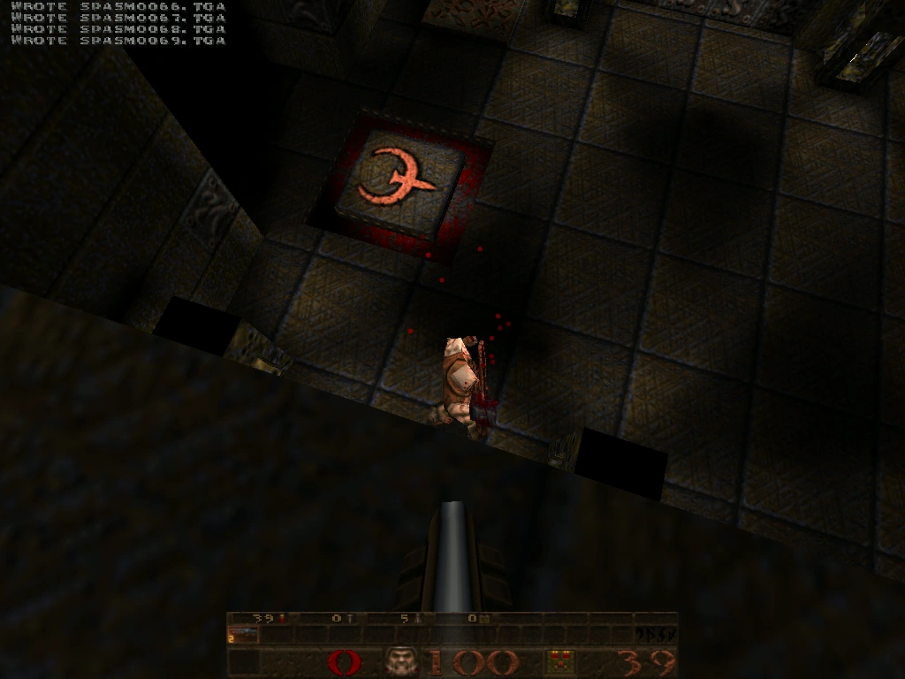
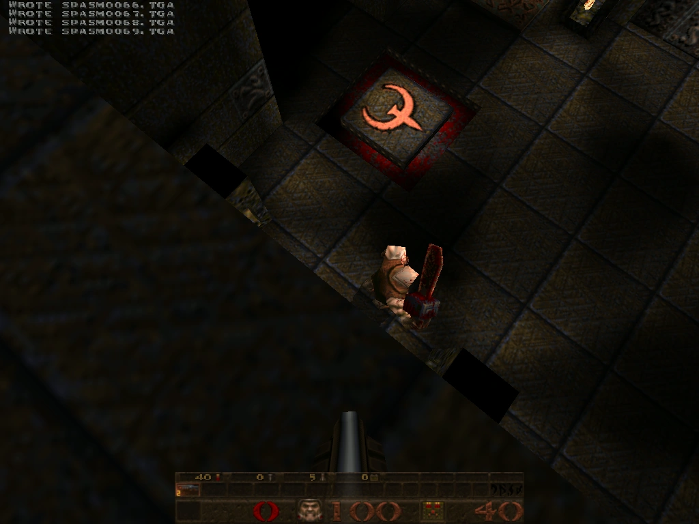

A modern QuakeSpasm source port that runs Quake natively on vintage PowerPC G3, G4, G5 and early Intel Macs — from a 1999 Power Mac G3 on Mac OS X 10.3.9 Panther to a 2019 iMac, with automatic per-machine hardware tuning.
This is a QuakeSpasm fork tuned to look as good as possible while staying playable on six retro Macs spanning 1999–2019. One source tree builds a single fat universal binary (PowerPC G3 + PowerPC G4 with AltiVec + Intel x86_64); the right configuration for your machine is selected automatically at launch via sysctl hw.model. It is free and open source under the GPL, inherited from upstream QuakeSpasm.



If you are searching for how to run Quake on any of these exact machines and OS versions, this port is built and benchmarked for them:
| Machine | CPU | Graphics | Mac OS X |
|---|---|---|---|
| Power Mac G3 (Blue & White / Yosemite, 1999) | 449 MHz PowerPC 750 | ATI Rage 128 16 MB AGP | 10.3.9 Panther |
| Power Mac G4 (Sawtooth AGP, 1999) | 500 MHz PowerPC 7400 | NVIDIA GeForce2 MX 32 MB | 10.4.11 Tiger |
| Power Mac G4 (Quicksilver, 2001) | 733 MHz PowerPC 7450 | ATI Radeon 9000 Pro 64 MB | 10.4.11 Tiger |
| Mac mini G4 (PowerMac10,1, 2005) | 1.25 GHz PowerPC 7447A | ATI Radeon 9200 32 MB | 10.4.11 Tiger |
| Mac mini (Intel Core 2 Duo, 2007) | 2.33 GHz Core 2 Duo | Intel GMA 950 64 MB | 10.7.5 Lion |
| iMac 27" (iMac19,1, 2019) | 3.7 GHz Core i5-9600K | AMD Radeon Pro 580X 8 GB | modern macOS |
The same DMG installs on every supported Mac. It is built on Panther so it mounts on everything from Mac OS X 10.3.9 through the latest macOS, and the .app inside is a fat binary that runs natively as PowerPC on G3/G4/G5 and as Intel x86_64 on Core 2 Duo and newer. PowerPC G5 machines run the G4 AltiVec slice. (Pre-Lion 32-bit-kernel Intel Macs are not supported.)
lipo into a single .app.hw.model and applies a configuration profile tuned for that exact computer's CPU and GPU.QuakeSpasm-OldMac-<version>.dmg).Quakespasm.app and quakespasm.pak into a folder, e.g. ~/Desktop/quake/.id1 folder in next to them, containing pak0.pak (the shareware episode) or pak0.pak + pak1.pak (the registered game — available on Steam or GOG).Quakespasm.app and play.On modern macOS the unsigned bundle is quarantined — either right-click → Open, or run xattr -dr com.apple.quarantine ~/Desktop/quake/Quakespasm.app. Panther, Tiger and Lion do not need this.



The same six-machine PowerPC + Intel fleet and tooling applied to Quake II (yquake2 base). One universal binary for Panther, Tiger, Lion and modern macOS.
Quake III Arena (ioquake3) on the same fleet, pinned to the last SDL 1.2 commit so it still runs on Panther and Tiger. Yes — Q3 on a 449 MHz G3.
A Retro68 PowerPC CFM port of classic GLQuake — a runnable Quake for Mac OS 8.6 / 9, before OS X.
The full source tree, build scripts, benchmark history and engineering notes live on GitHub: github.com/matthewdeaves/old-mac-quakespasm. It documents the cross-compile pipeline, the per-machine autoexec configs, the AltiVec work and a rolling benchmark CSV tagged by commit. Built on the upstream QuakeSpasm engine; GPL-2.0-or-later.
For the full story — how the port was built and tuned machine by machine — read the write-up: Optimising Quake on six old Macs.